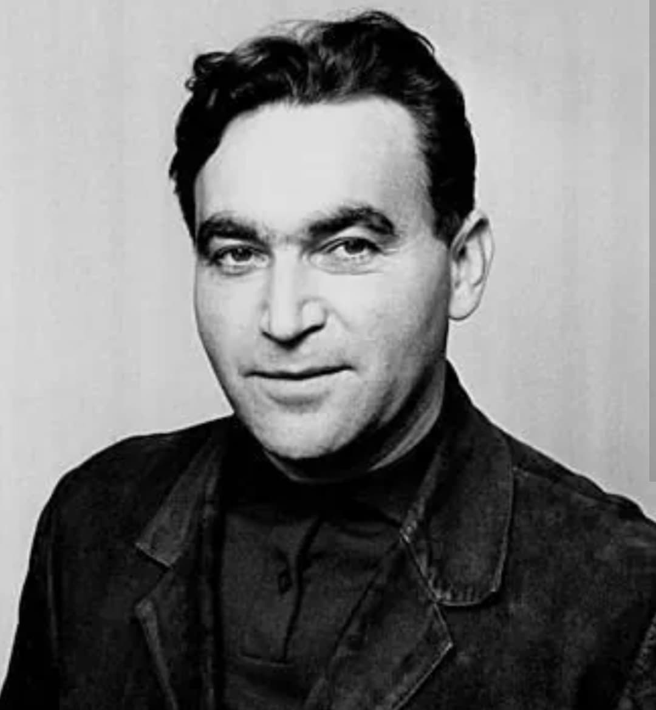
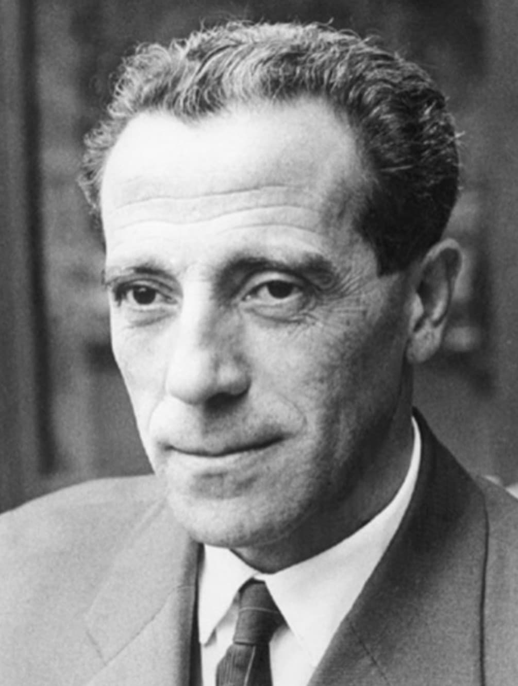
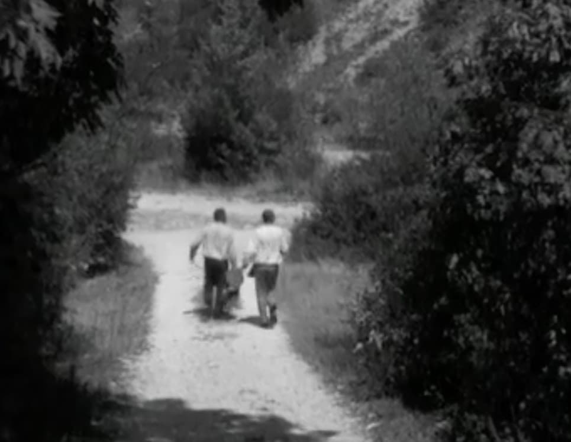
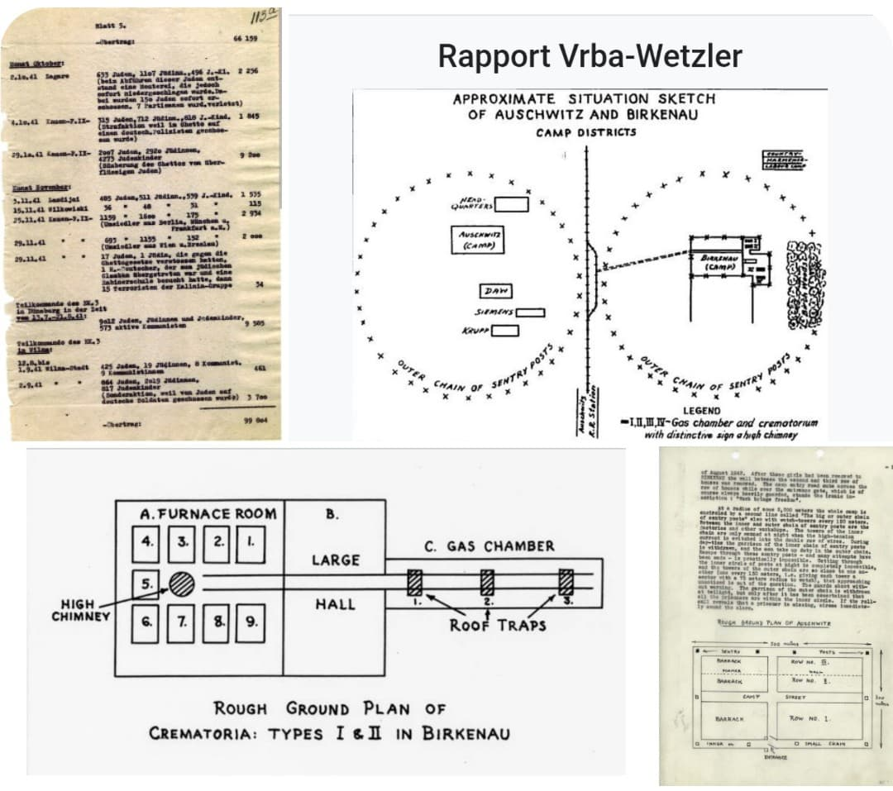

En avril 1944, deux déportés juifs slovaques, Rudolf Vrba et Alfred Wetzler, parviennent à s’évader d’Auschwitz. Leur fuite est l’une des plus célèbres de l’histoire des camps. Leur témoignage, connu sous le nom de Rapport Vrba–Wetzler, est le premier document détaillé, précis et irréfutable décrivant le fonctionnement du camp d’extermination : chambres à gaz, crématoires, sélections, convois, chiffres d’extermination. Ce rapport a un impact historique majeur : il contribue à freiner la déportation des Juifs de Hongrie.

Né en 1924 en Slovaquie, Rudolf Vrba est déporté à Auschwitz en 1942. Intelligent, observateur, il mémorise les chiffres, les convois, les procédures du camp. Il devient l’un des témoins les plus précieux de l’histoire de la Shoah.

Né en 1918, également déporté à Auschwitz, Wetzler est méthodique, calme et déterminé. Son rôle est essentiel dans la rédaction du rapport et dans l’organisation de l’évasion.
Le 7 avril 1944, Vrba et Wetzler se cachent dans un espace creux entre des planches de bois, dans une zone de travaux. Ils restent immobiles pendant 8 jours, tandis que les SS fouillent le camp. Le 10 avril, ils parviennent à s’échapper, traversent la Pologne, puis atteignent la Slovaquie.

Leur témoignage est d’une précision exceptionnelle. Il décrit :
– les chambres à gaz
– les crématoires
– les sélections
– les convois
– les chiffres d’extermination
– les plans du camp
– le processus industriel de mise à mort
Le rapport est transmis à la résistance slovaque, puis aux gouvernements occidentaux, à la Suisse, aux États-Unis et au Royaume-Uni.

Le rapport contribue directement à freiner la déportation des Juifs de Hongrie. Pour la première fois, les Alliés disposent d’un document détaillé, irréfutable, confirmant l’ampleur du génocide.
L’histoire de la révélation d’Auschwitz ne repose pas sur un seul homme, mais sur trois témoins majeurs dont les actions se complètent. Chacun a joué un rôle décisif, mais leur impact a été différent selon le contexte international, la réception de leurs rapports et la situation militaire.
Officier polonais, Pilecki s’infiltre volontairement à Auschwitz en 1941. Il organise un réseau clandestin, collecte des informations et transmet plusieurs rapports à la résistance polonaise puis aux Alliés. Ses documents décrivent :
– les exécutions
– les tortures
– les crématoires
– les sélections
– les meurtres de masse
Pourtant, ses rapports sont sous-estimés. Les Alliés jugent les chiffres « impossibles », les témoignages polonais « non vérifiés », et les priorités militaires dominent. Pilecki dit la vérité, mais le monde n’est pas prêt à l’entendre.
En avril 1944, Rudolf Vrba et Alfred Wetzler s’évadent d’Auschwitz. Leur rapport est d’une précision exceptionnelle :
– plans des crématoires
– chiffres détaillés
– itinéraires des convois
– descriptions techniques du processus de mise à mort
– estimation du nombre de victimes
Cette fois, les preuves sont irréfutables. Le rapport est traduit, diffusé, publié, confirmé par d’autres sources. Il contribue directement à freiner la déportation des Juifs de Hongrie.
Pilecki informe tôt, mais ses rapports arrivent dans un contexte où les Alliés doutent, minimisent ou ne comprennent pas l’ampleur du génocide. Vrba & Wetzler arrivent plus tard, mais avec des preuves techniques, des plans, des chiffres, et au moment où les Alliés peuvent enfin agir.
Pilecki fut le premier à révéler Auschwitz, mais ses rapports furent sous-estimés. Vrba & Wetzler apportèrent en 1944 des preuves irréfutables, forçant enfin les Alliés à reconnaître la réalité du génocide. Ensemble, ces trois hommes sont les témoins essentiels de l’histoire d’Auschwitz.